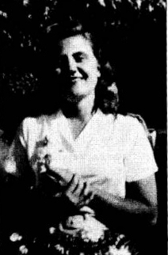
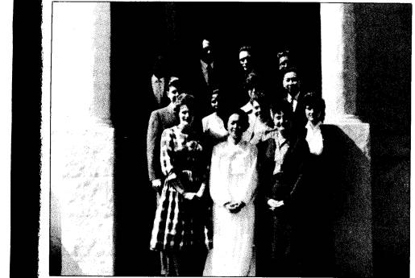
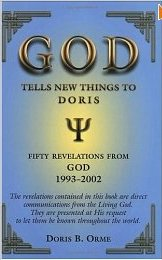

From Blessing Quarterly, Winter 87.
HOW GOD AND JESUS LED ME TO
FATHER 1959-1960
By Mrs. Doris
As far back as I can remember, between the ages of three and four, I had so many wonderful experiences with God and Jesus, all leading me to our beloved True Parents. These experiences showed me how Satan would try to thwart God's will being done on earth through the Messiah. From childhood, I often heard at night the voice of God calling me and saying,"You must worship me in spirit and truth. The son of man will come." When I read my Bible, especially the Book of Revelation where it says:"And God will wipe away all the tears from their eyes and there will be no mourning nor crying any more and the former things will pass away"-I cried and cried even though simultaneously I would be filled with joy. Many times I told my mother,"Mama, the day is going to come in your lifetime when all the world is going to see God face to face, for God is going to send Jesus back again." My mother would say,"Doris, you say these things because you read it in the Bible" and I would answer her,"No, Mother, it is what God is saying to me in my heart."
And He Shall Be Persecuted
One night when I was half asleep I went into the spirit world and found myself running over beautiful green hills. God's love was all around me; the more I ran the more energy came to me.In the distance I saw a high mountain with snow on top and I felt I had to reach the very top of that mountain. When I reached the top, I saw above me a great white cloud and heard the most beautiful singing, like thousands of voices in chorus. The words were so beautiful:"Oh Gloria in Excelsis Deo." As I looked up, the white cloud began to part, and from a distance I saw a figure coming towards me. I know it was my Lord, but as it came closer, much to my sadness, I saw him hanging on the cross but could not see his face. I heard a great shout in heaven:"The Son of Man."
When I came out of this trance I was shaking violently and sweating all over. It took at least a half hour to calm myself. Then I kneeled down and prayed all through the night for an answer to this revelation, crying out to God,"Please, Heavenly Father, don't let them kill my Lord again. Rather kill me, unworthy as I am." Towards morning, God answered me, saying,"As the lightning flashes from the east to the west, so shall the Son of Man be in his day. But first he will be persecuted." The word"persecuted" came like a shout in my ears and was repeated over and over again.
Time of Preparation
It wasn't long after this experience that I was led by God from the east to the westcoast - to Fresno, California. In Fresno, I decided that I must prepare myself for the Lord's coming, praying day and night for sanctification. I awoke every morning at six o'clock and prayed an hour or more. At lunchtime I prayed another hour and at night another hour or two. MY main prayer was:"Make me a good woman, a good wife and a good mother, and prepare me in heart to see the Lord when he comes." I asked God to make me humble so that I thought nothing bad of any soul on this earth or in the afterlife.
After several weeks of praying and working very hard in the missions with alcoholics, and also in the Mexican migrant camps, I woke one morning and found my mind so clear. Going outside, I saw thousands and thousands of spirits descending onto the earth. I heard the words, "The Lord will come with His Holy Myriads."
Yearning for Perfect Love
Jesus appeared to me day and night for a period of forty days, telling me many wonderful things that would come on earth in the years ahead. Often when Jesus appeared to me there was an Oriental man with him; they seemed absolutely one in heart. Later, when I realized that Father (Sun Myung Moon) was on earth, I knew that this man I had seen with Jesus was Father.
Not long after this experience (1959), I moved to Oregon. It was there, very early in 1960 that I met Miss Young Oon Kim. I was living on a ranch outside of Eugene, Oregon, off a road called Oak Hill Drive. There was a vast forest at the back of the ranch. Often I would go into the forest and pray. I asked God many times,"Why don't you take me to the spirit world, because it is so much better there than on earth." I wanted to experience again what I had experienced when Jesus had appeared to me.
In that period I felt such contentment; I felt love for and saw beauty in everything and everyone I met. I knew that perfection was so magnificently beautiful, and I thought that only in the spirit world could I find this Perfect Love. At the time I did not know that our beloved Lord Sun Myung Moon was already on the earth, bringing to all of us that Perfect love that passes all understanding.
"Come Hunt Souls"
My father was a great hunter of wild animals. Though I was a strong Christian, he taught me from the time I was a young girl to hunt all kinds of game. One afternoon I was on the mountainside, hunting deer. As I waited very still, suddenly the same Oriental man whom I had seen with Jesus appeared in front of me, smiling. The perfume coming from him was like a strong, perfumed cedar smell. It was just intoxicating. He spoke to me very strongly, saying,"Lay down your gun and come hunt souls with me." I was so overwhelmed by this experience that I literally threw my gun to the ground.
I went immediately to see my dearest friend, Pauline Verheyen. I told her of my experience, for I knew that she would understand what had happened to me. She and I were very close in our love of Christ. In fact, we often went hunting together. She said,"Doris, truly this is a sign from Heaven, and I'm not going to hunt anymore, either."
A few days later while I was in the garden, suddenly a voice said,"Look into the sky!" As I looked ' my grandmother's face appeared-it was enormous and covered with light. It came closer and closer to me. Finally she spoke and said, 'At last you are here. Finally you have come." I felt a Feat joy in my heart from this experience. Directly after this experience I met Miss Kim.

Doris in 1960.
Meeting Miss Young Oon Kim
I had been invited to attend a meeting at a Doctor Gordon's home in the city of Eugene. There were about 30 students from the university there and among them was Miss Kim. Dr. Gordon asked me to give my testimony. After I spoke, Miss Kim came up to me and asked if she could speak to me at another the concerning the return of the Lord. A few days later Eileen Welsh (Lemmers) called and told me Miss Kim would like to see me. I was a little hesitant, but I finally agreed to go.
I went to see Miss Kim in Eugene; she was staying in a small, little room at the womens' club. She told me her testimony of how she received Jesus, and as she was speaking I had a vision. I saw myself sitting next to Jesus under a wisteria bower of flowers in Fresno when I experienced seeing Jesus for forty days and nights. Jesus said,"Fear not, she comes from me."
Miss Kim did not tell me anything about our Father, only she spoke about her fife experience with God and Jesus and then gave me a rough copy of the Divine Principle. She told me to take it and read it and pray and ask God if it were true.
He Has Come
I took it back to the ranch, went into the forest and read until dark. I realized it was saying that Christ was on the earth. I was so shocked, especially when it said that Jesus did not complete his mission and also that Satan had seduced Eve. I knew already from Jesus that the original sin was sexual, but I did not know that Lucifer had done such a thing.
I knew in my heart at that moment, no matter if the whole world denied him, I would follow even unto death.
All night I thought about the words I had read. I decided to fast for three days and I couldn't sleep the next night, nor the next, for my soul was sorely troubled. I finally got down on my knees, locked myself in my bedroom and cried out to God,"I don’t want to sin against You. Please tell me is this man from Korea Your blessed Son? I must know, and if You don' t tell me I will never eat again, and then, Heavenly Father, You will be responsible for my death and not I" All my life I had been waiting for the return of Christ, I feared God and never wanted to sin against Him in any way.
I cried and cried, and all of a sudden the room became electrified with the power of God. From spirit world I heard what seemed like thousands of voices singing and shouting,"And he is King of Kings and Lord of Lords, and he will reign forever and ever! Sun Myung Moon, Sun Myung Moon, the Holy One of Israel! Hallelujah, hallelujah, hallelujah!" I knew in my heart at that moment, no matter if the whole world denied him, I would follow even unto death.
As soon as I gained my composure, I immediately got in my jeep and went racing down the road to see Miss Kim. I was so filled with the spirit of God that I kept shouting and waving to people along the way with a heart filled with heavenly joy. When I reached Miss Kim I was so excited I could hardly speak. She calmly said,"Sit down." I said to her,"Do you realize what you have given me? Do you realize that this man in Korea is Christ?" She looked me straight in the eye and said,"Yes, the Lord has come." I grabbed hold of her and we both cried and cried. I felt at that moment closer to her than I had ever been to any person other than Christ in my entire life.
I left there and went back to the ranch where I met Pauline, who said,"Doris, what happened to you? I know the Holy Spirit is with you. What is it she told you?" But I could not say a word and she was very hurt. She felt I was withholding something from her. I arranged for her to meet Miss Kim and she had great revelations from God also.
The Wedding Feast
We were in Galen and Patty Pumphrey's house on Oak Hill Drive one evening. Miss Kim had moved in with them and she had invited people for a prayermeeting and speech by David Kim. Miss Kim had received a small box of rice cakes from Korea, from Father's wedding feast with Mother. We were all sitting around, singing and praying. At that meeting there was a pentecostal woman and her name was"Goldie" and also there was another pentecostal woman with her. They had not heard anything about Divine principle at this time (Apr 1960); they knew nothing about Father.
Miss Kim brought the rice cake, out and said,"Would you like to taste some Korean food?" Some of us knew that it was from the wedding and we were so excited to receive it. As we were eating it this woman stood up and started speaking in tongues, and then she spoke in English. She said these words over and over again:"The Bride has made herself ready! Blessed are ye who are invited to the marriage supper of the Lamb!" Needless to say, everyone in the room who knew about Father could not deny such a great revelation as to who he was. What a great privilege and honour it was to be able to partake of the smallest taste of that holy food!
Escaping Persecution
After several months of much persecution from our families, Pauline and I left Oregon. We left in a jeep with very little money and just the clothes on our backs. As we were travelling over the High Sierra Mountains in the middle of the night, it became very cold and started to snow. Suddenly the jeep stopped dead. We got out of the jeep, wearing only" fight summer dressed and huddled close and hailed down a large truck. The driver was amazed to see us in this way, so he took us into California, to a little town called"Doris". We felt from this that we were going in the right direction.
God kept showing us in visions that he would take care of us and not to be afraid . We had just enough money to take us to Fresno, California, where we went immediately to the house of one of my Christian friends. However, she was shocked to see us and did not offer us a place to stay. Since we had no money, we hoped to find someone who would let us room and pay later. We saw an add which said,"Christian girls wanted to share rooms in a private house. We went there immediately. Fortunately, it was only two blocks from my friend's house.
God Will Provide
We knocked at the door and a lady named Mrs. Dodge, a Seventh Day Adventist and devout Christian' opened the door and invited us in. I said to her, "We have revelation from God about the return of the Lord." She looked at us and tears welled up in her eyes, and she said,"Wait a minute." She went into her bedroom and came out with a paper in her hand. On it was written,"Please, God, send me some Christian girls to five with me; I am so very lonely!" The next line was:"Don't worry, they are on the way."
She said she had received that revelation from God two days before we had arrived at her door. When she opened the door, God said to her,"These are the girls I promised you. Take care of them for me."
She opened her heart, giving us a place to sleep and clothes for our backs, food for our stomachs and money for our pockets; she even let us use her car. After a couple of days I got hired as a waitress in a pancake house there.
Moving On Again
One day on my way home from work I had a vision of my father coming after me. When I arrived home, there he was. He tried in every way to convince me to go back home to Oregon. Both Pauline and I received from God that he might do something drastic. So in the middle of the night we left again, this time for San Francisco. We arrived there in the early morning, with very little to wear. We went to the Salvation Army and bought two coats for one dollar each. We found a room on Sutter Street, above a bar, and we had just enough money for the first week's rent. I found a job at a Foster Restaurant. However, for a couple of weeks before the job paid any money, we lived on bread, cheese and avocados which were very cheap.
His Healing Love
After working in the restaurant for three days, I ate some bad food before getting off work. In the middle of the night I woke up deathly ill and Pauline ran out to get a doctor.
When I was alone in the room, Father came to me and all of a sudden I was miraculously made well. Father kept singing to me a most beautiful love song. I can remember that song as vividly today as I did at that moment. The words were:"We'll be close as pages in a book, my love and I, so close we can share a single nook, share every sigh. So close that before I hear your laugh, my laugh breaks through and when a tear starts to appear, my eyes grow misty too. Your dreams may come tumbling to the ground; we'll hold them fast, Darling, as the strongest books bound, we're bound to last."
The love I felt from our Father was so deep and so beautiful and comforting that I can never forget that moment. When Pauline came back in the room she just looked at me and said,"You took great! Father is here, isn't he?" Pauline and I were so close in heart that if she cut her finger I would feel the pain. If I were sick she would know it immediately. We were like Siamese twins in the spirit.
United Again
After a few months, Miss Kim, Galen and Patty Pumphrey and George Norton (who had all accepted Father in Eugene, Oregon) came to San Francisco and we started our first official American center on Cole Street, in a flat on the third floor. During that time we worked day and night for over a year to buy the first center on Masonic Avenue. We made many conditions of indemnity to fulfil the dispensation for America and we felt not only responsible for America but for the world.
We were all so very close to each other in heart and we loved our mother, Miss Kim, so very dearly because she was such a wonderful example to all of us.
Everywhere we went, people were testifying about Miss Kim and her deep love for our Father. There were many wonderful experiences and I would like to tell you a few of them.
"Nothing Will Stop Him!"
One evening a little old lady called Lovey Murray came to our door. She said,"God told me in a dream to come to this address and I would find His Son." She was about eighty years old. Miss Kim was teaching Divine Principle to several members, and afterwards we all went into the kitchen where she continued to speak about Heavenly Father.
All of a sudden this old woman went into trance and she started shouting in a masculine voice, very powerfully, saying,"I see a man in Korea; he has a white cross in one hand and a white flag in the other, and he is marching into North Korea, Red China, Japan and into Russia and all over the world. Nothing will stop this man from bringing the entire world to God; nothing will stop this man - absolutely nothing!" After this she fainted, and we had to take her home in a taxi.

Center on Masonic Avenue in San Francisco, 1961. From left to right in the front: Pauline Verheyen, Miss Kim and Doris. Behind them (left to right) Gordon Ross, unknown, Patty Pumphrey, unknown. Behind Patty are Barbara Vincenz and Edwin Ang. Top row (left to right) Peter Koch, Galen Pumphrey, George Norton and Doug Burns.
Our Precious Spiritual Mother
Miss Kim taught us day and night and she never wasted even a moment. We heard stories about Father at breakfast, at lunch and at the dinner table, and everyday was so exciting and so filled with the joy of the Kingdom! Many of us worked sixteen hours a day and fasted continually, witnessed and made prayer conditions continually. However, Miss Kim never told us to fast, to pray or to do these conditions, but through her great inspiration and great love for our Father, we all wanted to do whatever we could to build the Kingdom of Heaven on earth.
Dedicating Our House to God, Ourselves to God
Miss Kim taught us how to love the creation. After many conditions such as walking many miles in the early morning hours, working day and night until our feet often bled, we finally moved into Masonic Avenue, our first home for Heavenly Father in America. Every step we took was a joy, knowing that every step would help save the world.
I remember Galen used to get up at five o'clock in the morning and deliver mad all day until three o'clock in the afternoon, and then come back and work at washing dishes all night in a restaurant five nights a week. The pain must have been unendurable many times for him, because one leg had been stricken by polio when he was a child, and it was not easy for him to stand for long periods. On the weekends he painted and cleaned the three-story center.
We also participated in cleaning and painting and redoing the entire three stories which was like three flats. We made the most beautiful holy room. When we finished we all gathered in that room and Miss Kim dedicated it to God and True Parents. I remember at that moment the entire room was filled with great saints of old: Jesus, Moses, Abraham, St. Peter, St. Paul and others. Angels were surrounding the entire room and our True Parents were in the midst of us. I can never forget those wonderful, precious times; they are as alive in me today as they were then.
Thank You for This Blessing
I am eternally grateful to God, True Parents, to my elder brothers and sisters in Korea, to our beloved Miss Kim and to all my ancestors in the spirit world for giving me the opportunity to serve God in this hour. He has given to us the most precious gift He could ever give mankind-His beloved Son, making it possible for all men and women to become sons and daughters of filial piety. This hour we live in is greater than when God first created the world. God bless all of you brothers and sisters. I love you all so very much.
In Their Precious Holy Names
Doris
Epilogue: 2011
In the late 70's for various reasons Doris and her husband Dennis, left England and the movement, and moved to Florida.God continued speaking to and through Doris.
She published two books:
God Tells New Things to Doris: Revelations from the Heart of God
God Speaks to Doris: Seventy Revelations from God, 1993-2006
